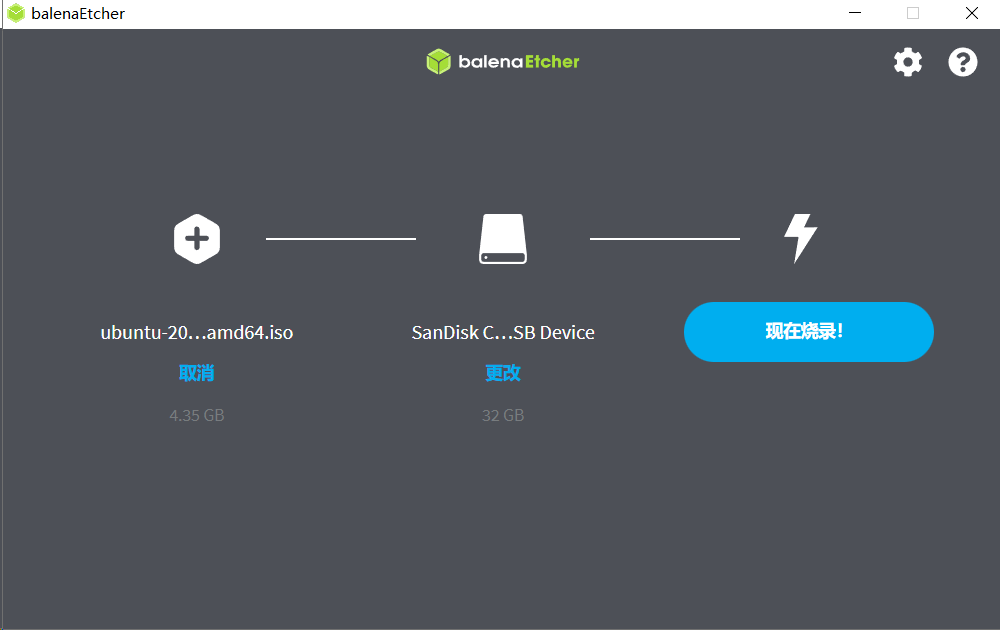
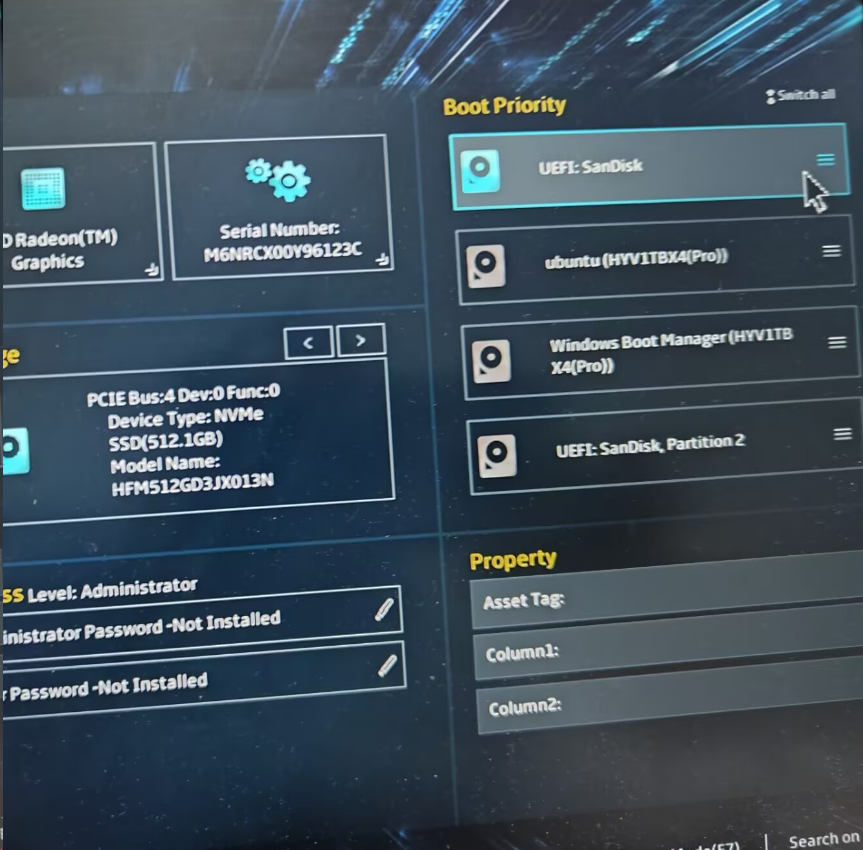
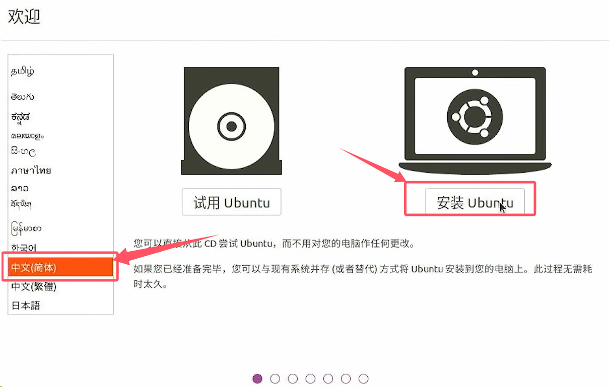
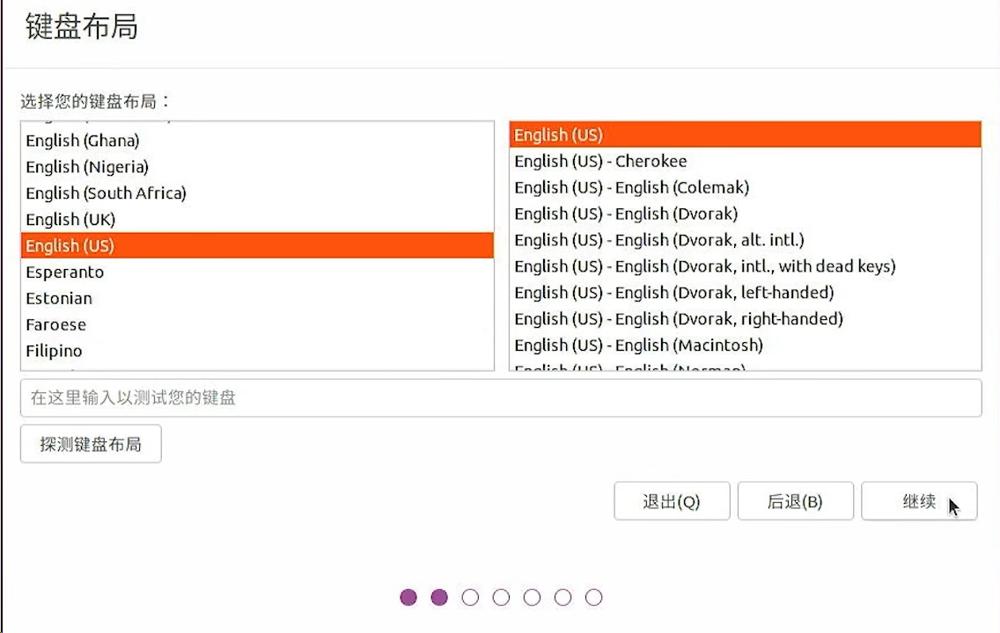

ubuntu系统安装
环境介绍
Ubuntu 20.04 镜像
balenaEtcher 镜像烧录软件
空闲u盘一个
Ubuntu 20.04 镜像下载
二选一
1.官网下载
2.清华源下载
balenaEtcher 下载
在 balenaEtcher 官网下载并安装软件
准备好 u 盘进行烧录
Danger
注意！！！你的 u 盘数据将会被全部清除，注意备份
-
选择下载好的镜像文件
-
选择准备好的 u 盘
-
现在烧录！

分配存储空间
如果要安装ubuntu单系统，则不需要进行分配，可以提前格式化一下更方便
如果要安装windows-ubuntu双系统，需要在磁盘管理中选择压缩卷，获得一个空闲的分区
选择u盘启动
关机后插入u盘，按下开机键后疯狂按f1/f2/f12/delete等按键可进入bios系统或者启动项选择，调整选择u盘启动即可
这里以华硕天选笔记本为例，按下开机键后疯狂按f2，拖拽u盘（我这里是SanDisk闪迪）到第一位，按f10保存并退出，重新开机即可进入启动盘

安装Ubuntu
选择中文后点击安装

键盘布局选择继续

先不联网，直接继续

这里直接继续

选择其他选项

选择空闲，点击加号

若是单系统需要创建efi分区，大小填写500mb
双系统可不用创建

再次选中空闲，点击加号，把所有空间分给/即可

接下来一路继续即可
出现Please remove the installation medium, then press ENTER:
拔掉u盘按下回车即可
开机无wifi
Tip
如果您在使用机载电脑时，遇到了没有WiFi的问题，可以参考以下博客进行解决：
万能更新软件
- 首先使用手机USB数据共享/插入网线给设备接上网络
- 切换apt软件源
sudo apt update检查软件更新sudo apt upgrade更新软件，这会花费一些时间，但可以解决大多数网卡驱动的问题- 重启
单独编译安装
若上面的方法无法成功，则需要搜索自己网卡具体型号的wifi安装方法
查看网卡型号，Ethernet Controller是有线网卡，Network Controller是无线网卡
lspci -nn | grep -i net
在这个网站可以查询到网卡的型号，比如输入 8086:51f1，点击Jump，可以查到网卡型号是Wi-Fi 6E AX211 160MHz
部分特殊网卡记录
- AX211 或 AX201
cd ~/Software
wget https://archive.ubuntu.com/ubuntu/pool/universe/b/backport-iwlwifi-dkms/backport-iwlwifi-dkms_9858-0ubuntu3_all.deb
sudo apt update
sudo apt install ./backport-iwlwifi-dkms_9858-0ubuntu3_all.deb
sudo reboot